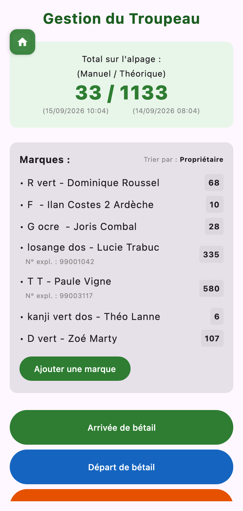
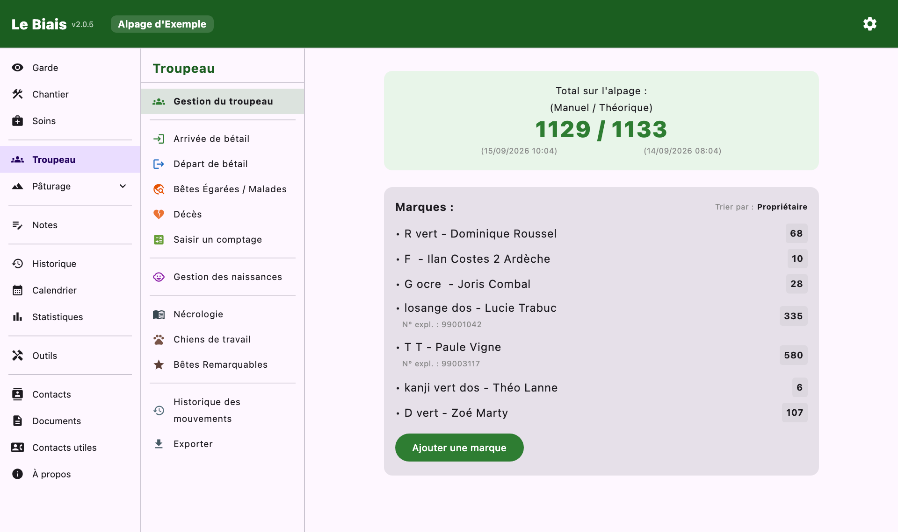

Documentation
Documentation
Savoir combien de bêtes sont là, à qui elles sont, et garder la trace de chaque entrée et sortie.
En tête de l'écran, le total sur l'alpage s'affiche sous deux formes :
L'écart entre les deux, c'est ce qu'il faut aller chercher.


Chaque marque a un nom ou marquage (facultatif), un propriétaire, et un ou plusieurs numéros d'exploitation. La liste se trie par nombre de bêtes ou par propriétaire et affiche l'effectif présent de chacune. Une marque ne peut être supprimée que s'il n'en reste aucune bête sur l'alpage.
Historique des mouvements liste tout, filtrable, avec l'effectif théorique à chaque date. Il s'exporte en PDF (relevé de troupeau : total présent, détail par marque, bilan arrivées / départs / décès).
Nécrologie regroupe les décès, filtrables par marque et par cause, avec le point GPS et les photos — de quoi préparer un constat.
Saisir un comptage enregistre le nombre de bêtes comptées et une remarque (conditions, détail par lot…). Le compteur des outils peut enregistrer directement son total comme comptage.
Gestion des naissances (aussi accessible depuis les soins) tient une fiche par mise bas :
L'option « L'agnelage modifie le compte total du troupeau » (paramètres) décide si les naissances s'ajoutent à l'effectif théorique.
Déclarer une bête égarée : marque, boucle si connue, caractéristiques, remarques, photos, et une première observation (date, lieu). Ensuite :
Les bêtes qu'on reconnaît de loin servent de repères : si elles sont toutes là, le troupeau a de bonnes chances d'être complet. Chaque fiche porte l'éleveur, le type, un nom, la boucle, la race, les signes distinctifs, des photos et le nombre présent.
En tournée, on pointe les bêtes vues ; le compteur « vues / présentes » avance, et Reset vus remet le pointage à zéro pour la tournée suivante.